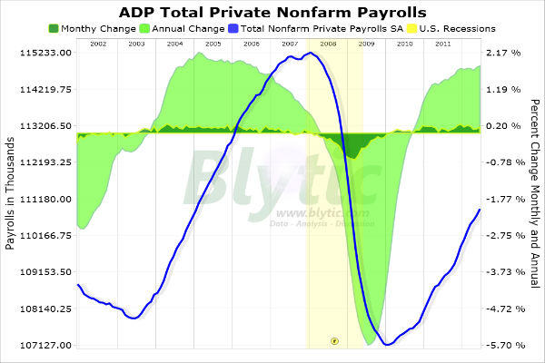
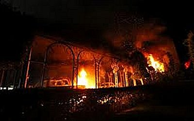
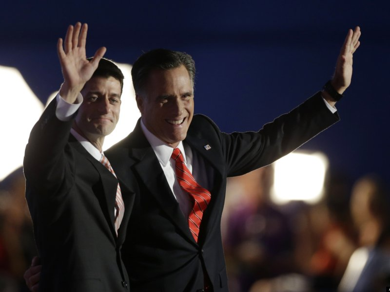
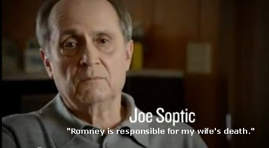
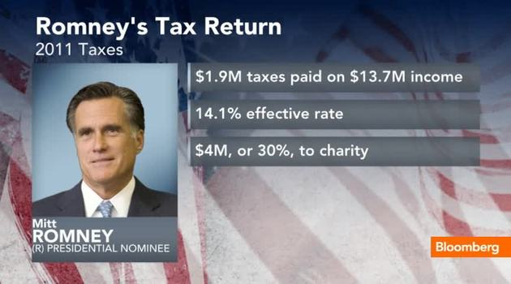

|
 |
 |
|
 Sean Hannity has been properly pointing out that less Americans are working today than when President Obama took office. A condition that has not occurred over a four year period of a president terms in over 80 years, if ever. This message has begun to reasonate and others are picking up, citing the government' own Buereau of Statistics for the documentation. Well, now this government announced today that on the eve of the election, it has corrected some employment figures and has magically gained just enough new found jobs to say that the President has had a net increase of a few thousand jobs over his term. How convienent.
 Why should we believe him? The ansewr is, we most certainly shouldn't. In the last six months alone, this administration and the President himself have been caught in all of the following out and out lies and attempts to willfully decive the public in order to impact the election...his election. This President has said:
 That the attacks on our Benghazi Consultate that killed our Ambassadro, two former Navy SEALS and another diplomat were spontaneous, not pre-planned, and based on a obscure anti-islamic vide on the internet. They repeatedly told this to the Americna people for over a week after the attacks. The President himself, the President's Press Secretry, the Secretary of State, the UN Ambassador, the Vice Presient (to name a few) have all willfully participated in this lie and cover-up. We now know that the administration knew within 24 hours that the attack had been planned and led by a former Gitmo detainee who is an Al Quida leader and that it was done in retaliation for the killing of top Al Quida leaders in Pakistan and Somalia. We learned that the attack was planned well in advance, that there was no "spontaneous demonstration," of any kind, and that it had nothing to do with any video...all direct contradictions to the Obama administration's lies and coverups.
That Barack Obama could not arrange his schedule to meet with our ally, Benjamin Netinyahu, the Prime Minister of Israel who wanted to meet with the President while Netinyahu was speaking at the UN. Netinyahu offered to meet in New York since the President was given his own address the day before, or to fly to Washington DC to meet him. The President's staff indicated he was too busy and would not be in Ney York on the dates Netinyahu was there. We now know that the President's schedule conflicts included an appearance on "The View," hosted by Whoopie Goldberg and a visit to a rap star's home for a campaign donation event. And for this, he could not make time for our ally who is facing down the potential of an extremist Nation, Iran, who is the chief sponsor of terror in the world and who is about to get nulcear weapons? Who has openly threatened through its own President to wipe Israel from the face of the earth? The Iraeli Prime MInister wanted a face to face meeting to discuss these very dangerous circumstancesa and this President could not "make time" for him because of an appearance on the View?
 That Mitt Romney, at a campaign stop with his Vice President choice, Paul Ryan were greeted with wild cheers for Ryan and that Romney came to the podium to ask the audience to ad his own name to the cheer and make it "Romny-Ryan," instead of just "Ryan". We now have taped audio of the event, and eye witness testimony from people who were there who say (and on the tape we hear) that the crowd was cheering "Romney," and that Romney graciously approached the microphone and asked the crowd to please include his Vice President in the cheer and say, "Romney-Ryan," so he would be included and it would not all be about himself. The Obama campign knowingly reversed it to try and make Romney look the exact opposite of what he was, a gracious leader ensuring that his whole team was recognized.
 That Mitt Romney, the GOP candidate for President, was responsible for the death of a woman whose husband worked at a company that failed after Bain Capitol (Romney's former firm) tried to salvage it, causing him and his wife to lose her insurance and therefore not be able to be properly cared for when she contractd cancer. The Obama campaign claimed it knew nothing of these circumstances, but still felt Romney should be held to account. We now know that the Obama Campaign itself, in fact the campaign leader who insisted to the press that she knew nothing of it, in fact on a taped campaign phone call talked with the husband and helped plan and coordinate the ad, and that the woman died seven years after Romney left Bain, and several years after Bain had sold the company, and that she had her own personal insurance to boot. Romney and Bain had nothing to do with it.
 That MItt Romney, according to "unknown sources" had paid no taxes for a ten year period and was therefore a tax cheat and potential felon. This claim was made by the Democratic leader of the U.S. Senate on the Senate floor, and the President refused to distance himself or his campaign from the comments. We now know that Romney paid all of his taxes strictly according to the law, both when he earned direct payroll according to the graduates schedule, and when he earned from his investments according to the 14% investment tax law...for all of those years, and in fact for his entire career. We know that in addition to that, he donated over 50 million dollars during that entire time frame to charities of which less than half went to his church with the rest going to many other reputable charitable organizations. ...and remember when the President was running for office and after he was elected, he said and solemly promised the following:
That the President was going to cut the deficit in half, promising to do so while he campaigned in 2008, and then in 2009 afyter being elected, to address what he called at the time the worst economic crisis in America since the great depression. Now te President claims he simply did not realize how severe the crisis was, even though he stated how bad it was while running, and he has increased our deficit by over $ 6 trillion dollars, more than the last several president (towo of which served eight years) combined!
That the Preident was going to use stimulus and other emergency funds to the tune of almost two trillion dollars to create jobs in this country and lower the unemployment rate. Now we know that hundreds of billions of that money went to his cronie supporters and their busineses where, in some cases laons were renegotiated so the citizens stood in last place and his cronies were in first in case of default, and the ret ws put into either government hiring (which further drains the economy) or into failing proposals such that the money has been wasted. Now we know that there were no "shovel ready" jobs, that the President's friends and supporters have become rich from taxpayer bail outs and further contributed to his campaign, and that the unemployment rate remained higher than 8% throughout, maintiaining the highest prolonged unemplyment rate over 8% in the last 70-80 years.
That this president's administration would be the most honest and transparent in history. we now know, just given the above (not to mention the Fast and Furious debacle, the Nuslim Brotherhood coming to power in Egypt instead of a democratic regime, the horrible leaks of vital national security information from the White House, the direct lies regarding Solyndra, the President's abuse of power regarding telling his agencies to not enforce the law with regards to DOMA, illegal aliens, etc.) , that this administration has been one of the most dishonet, cover-up, misleading and currupt administrtions in history.
That if the President didn't fix the economy and do so convincgly in the first three years, his would be a one term proposition. Well? So, no Mr. President. we not only do not believe your new-found job numbers that convienently cover up your record on jobs, but we are not believeing any thing you have to say given this record and are going to understandably and justafiably turn you out in the street come November!
It's time for a President who will lead.
It's time for a President who reflects and embraces America's traditional values and goodness. It's time for Mitt Romney and Paul Ryan in 2012!
ADVERTISEMENT BY THE SPEICAL OPERATIONS FOR AMERICA GROUP
|
FINE ALL-AMERICAN, LIBERTY ORIENTED BOOKS AUTHORED BY JEFF HEAD
 Dragon's Fury - World War Against America and the West: Following great success in the War on Terror, politicians and analysts alike thought that future global conflict was impossible...but they were wrong. Journey into a possible future where Islamic terrorists sharpen their horrific skills & ally with Red China. In such a future, can the U.S. & western civilization survive? |
 The Stand at Klamatjh Falls: How rural western farmers and their supporters stood up to entrenched environmentalism, activist judges, and agencies of the Federal Government in southwestern Oregon...and prevailed. |
BACK TO JEFFHEAD.COM
Copyright © 2012 by Jeff Head, All Rights Reserved